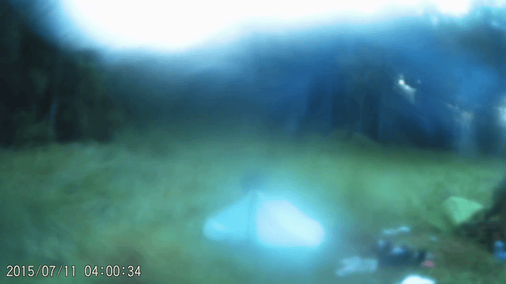
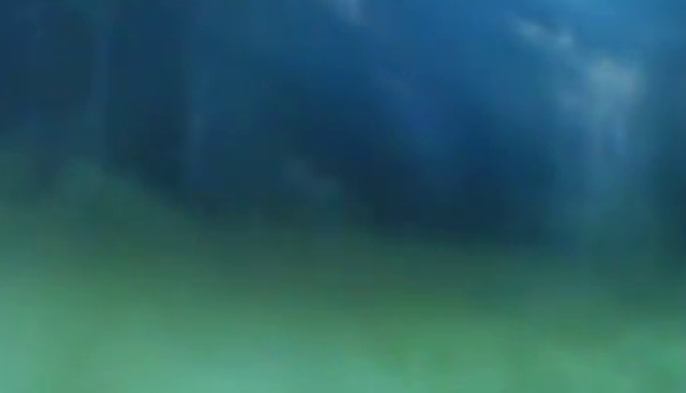

Foreword: after watching video 'The analysis of anamolous flight of object thrown by Bigfoot' (https://www.youtube.com/watch?v=od5TsGRkbA4) I've decided to watch old videos frame-by-frame. This approach turned out to be fruitful as something interesting was found in video https://www.youtube.com/watch?v=cZ0iqJPS-Ac.
About the video: the video was recorded 8 years ago on a camera trap. It recorded the camp of Igor Dmitrievich Burcev and Andrey Nikolaevich Stroganov. On the recording, behind a camping tent, a dark shape could be seen which was not visible by the naked eye - a camouflaging Bigfoot.
A new discovery: an object which moves from 12th second of youtube video (the video timestamp corresponds to 2015/07/11 04:00:34) to the 14th second of youtube video (the video timestamp corresponds to 2015/07/11 04:00:36). The object begins its motion in the right part of the scenery somewhere between the campfire and the forest then leaps leftwards. Afterwards the object changes its movement direction towards the camping tent where it hardly could be seen. After that it continues its movements leftwards. The object looks unusual - its color resmebles fog, and on different video frames different parts of humanoid shape could be seen. It moves very fast.
To illustrate it a gif file was created with object outlined by dots.
Without dots.

It moves in a non-linear motion changing its trajectory. On marks 1-10 (corresponds to 365-374 video frames) a leap clearly could be seen. On marks 11-15 (corresponds to 375-379 video frames) there is most likely a leap too. Also on marks 53-57 (corresponds to 417-421 video frames) there could be a leap too, but the object on that frames is not seen clearly enough to say that definetely - one could think that this part of the path object moves partially covered by grass and only its upper part is seen. It could be that object is moving across that part of the path on all fours.
Video frame 374 is the best candidate for object appearence illustration.

Without outline.

My further deductions are of a probabilistic nature - it's most likely that I am quite close to, but not exactly precise in numbers. Any corrections are appreciated.
The analysis has been conducted with the Tracker software version 6.1.6 (https://physlets.org/tracker/). For best results it is required to: set the frame range; mark an object frame-by-frame; set frame rate per second; and position the calibration stick - in order to set a dimmensional refference so calculations could be scaled.
The frame range is set as: 364-423.
The video timestamp helped to count the frame rate - it is 30 frames per second.
Marking of object frame-by-frame is relatively easy at the right part of the scenery, but it is harder to do when object is in the middle or in the left part of the scenery. And there is a pequilarity - there are frames when object appears without a motion even though on adjacent frames its movement is significant. These are: marks 5-6 (video frames 369-370), marks 12-13 (video frames 376-377), marks 18-19 (video frames 382-383), marks 24-25 (video frames 388-389), marks 29-30 (video frames 393-394), marks 31-32 (video frames 395-396), marks 37-38 (video frames 401-402), marks 40-41 (video frames 404-405), marks 43-44 (video frames 407-408), marks 50-51 (video frames 414-415), marks 56-57 (video frames 420-421).
The most difficult part is a dimmensional refference.
Not only I don't know the exact dimmensions, but there is also a task of accounting to distortion because of the distance from the camera - the further object is from the lower part of the scenery, the shorter it would appear. An exaggerated illustration of the idea - the trees in the upper part of the scenery are surely taller than a camping's tent triple height. Another problem is the grass - only its upper part is seen and it is hard to guess its offset from the ground level.
To solve this conundrum I've used another video from the same place from the same camera trap: https://www.youtube.com/watch?v=v_3cR2UQs1Q.
The best candidate for dimmensional refference is Igor Dmitrievich. In his book writing about the size of a footprint he has mentioned his height: 186 centimetres. I take into account that usualy measured height is bigger than heigh while in free motion, and on the other hand I don't know the boots height. So I assume Igor Dmitrievich's heigh on video as 180 centimetres.
The size decrement due to distortion because of the distance from the lower part of the scenery was accounted for by the proportion ratio. In order to do that several measurements of different offset from the lower part of the scenery were taken - two measurements in center and two measurements in right part.

Measurements:
mass_A
| x | y |
| 1.328638E2 | 2.491196E1 |
| 1.340500E2 | 3.760519E2 |
| x | y |
| 1.874328E2 | 4.745134E1 |
| 1.933642E2 | 3.784245E2 |
| x | y |
| 3.701205E2 | 7.710843E1 |
| 3.748656E2 | 3.618165E2 |
| x | y |
| 4.175718E2 | 9.015755E1 |
| 4.140130E2 | 3.594439E2 |
| Mesurement | 720-y1 | Line segment legth |
| A | 695,08804 | 351,13994 |
| B | 672,54866 | 330,97316 |
| C | 642,89157 | 284,70807 |
| D | 629,84245 | 269,28635 |
A sanity check of proportion ratio.
By coordinates of A, B and length of A the length of B: 672,54866 x 351,13994 / 695,08804 = 339,753646343 while measured one is 330,97316.
By coordinates of B, C and length of B the length of C: 642,89157 x 330,97316 / 672,54866 = 316,378378421 while measured one is 284,70807.
By coordinates of C, D and length of C the length of D: 629,84245 x 284,70807 / 642,89157= 278,929195391 while measured one is 269,28635.
The biggest miscalculation is between B and C. I think it could be because the distortion is affected not only by vertical offset from the lower part of the scenery, but with a horizontal offset from horizontal center of lower part of the scenery as well. Thus the measurement D was selected as the closest to the object.
The calibration stick is placed on mark 9 (on mark 10 the creature is more distinct, but its leap is over and because of the grass it is hard to guess real ground level. Thus mark 9 was selected - in the midst of a leap). The calibration stick is based on its legs and upper part of calibration stick is offsetted from botom part on a length calculated according to the proportion ratio by the distance from the top of the scenery to the measurement point.

Let's measure it.

It's about 1.2 m
Due to the fact that now we have all the necessary components we can use Tracker to calculate velocity and acceleration of the creature. But we have to bearin mind that its calculated movements must be close to the leap so that calibration stick length would remain more or less correct due to the distortion. Let's say it is applicable to marks 1-20.

Average velocity is 9.9 m/c
Average acceleration is 73 m/c2
It could be that real numbers are slightly different from the calculated - I would be glad if someone improve my deductions/measurements. Nevertheless object's velocity is high - it is clearly seen in comparison with speed of movements of Andrey Nikolaevich.
Conclusions: